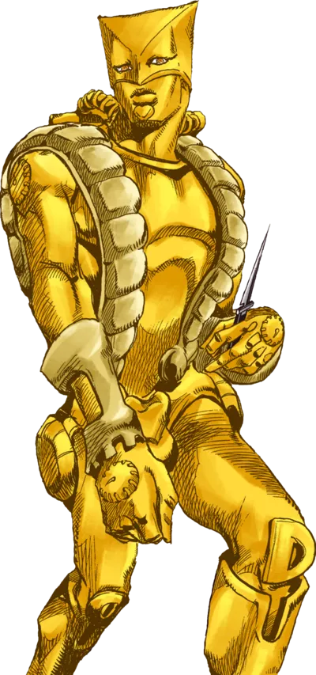
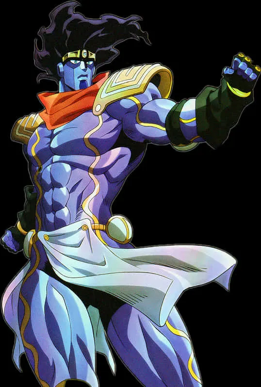
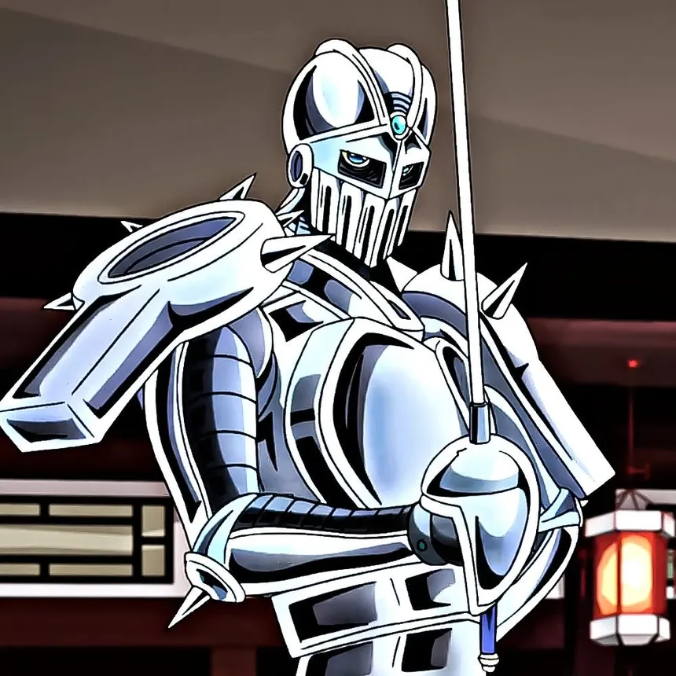
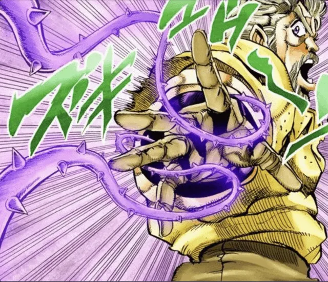
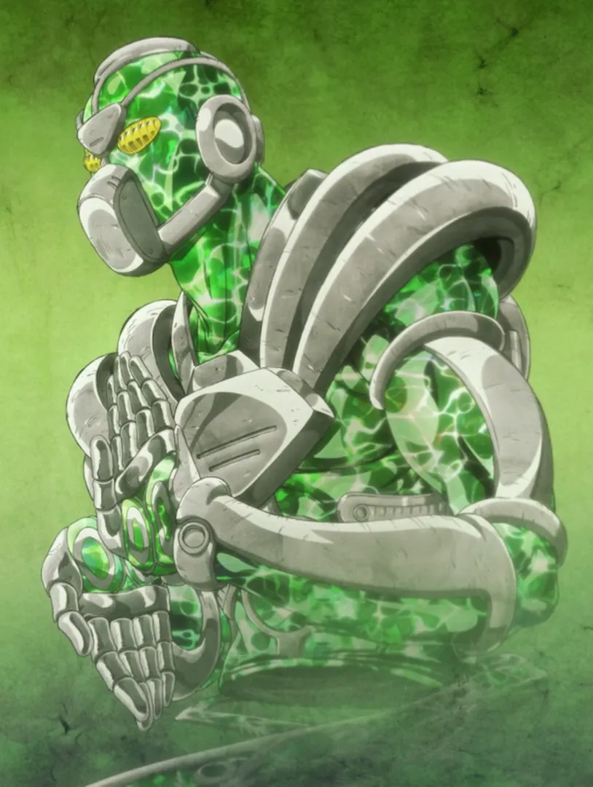

The World
Manié par : DIO
Pouvoir : Arrêt du temps (Za Warudo)
Les 5 Stands originels de Stardust Crusaders

Manié par : DIO
Pouvoir : Arrêt du temps (Za Warudo)

Manié par : Jotaro Kujo
Pouvoir : Force, vitesse et précision

Manié par : Jean Pierre Polnareff
Pouvoir : Maîtrise de l'épée et vitesse

Manié par : Joseph Joestar
Pouvoir : Divination et lianes

Manié par : Noriaki Kakyoin
Pouvoir : Émeraude Splash et possession